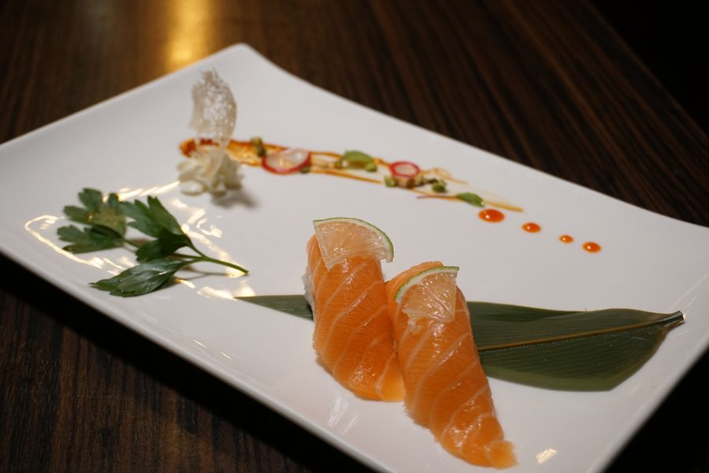
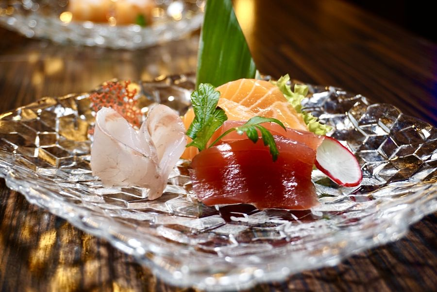
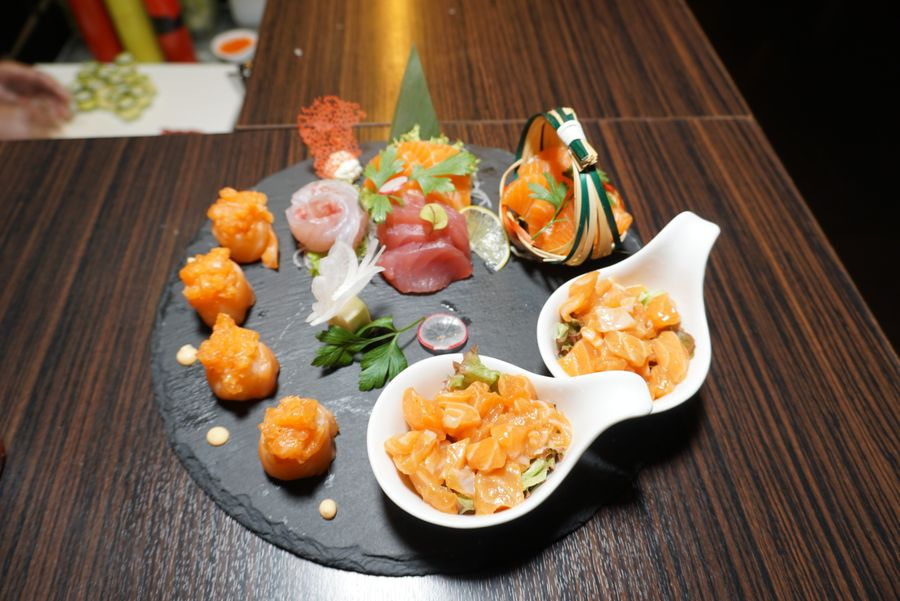

Primavera
Sgombro marinato, gambero rosso di Mazara, fiori di sakura sull’aceto di riso.
Marzo – MaggioVimercate · Piazzale Marconi 12
Dodici portate che seguono il mare e le stagioni, servite una alla volta al banco di otto posti. Come in una stampa: pochi tratti, tutti necessari.

一 · Le stagioni
Sgombro marinato, gambero rosso di Mazara, fiori di sakura sull’aceto di riso.
Marzo – MaggioBranzino, ricciola, anguilla laccata; il riso appena più freddo, lo zenzero più giovane.
Giugno – AgostoTonno grasso, ikura, il tartufo sul nigiri di salmone, funghi nel brodo.
Settembre – NovembreCapesante, gambero cotto al vapore, tempura di verdure, tè tostato.
Dicembre – Febbraio二 · Il banco
Foto vere del nostro menù. I prezzi sono per porzione; al banco si ordina un pezzo alla volta.
三 · Omakase
Il percorso breve: sei nigiri, una tartare, un dolce. Perfetto a pranzo.
€ 45Il banco intero: crudo, caldo, un brodo, due tartare e il nigiri al tartufo.
€ 68Con abbinamento di sake e tè: la sera lunga, solo venerdì e sabato.
€ 95四 · Storia
Il riso viene cotto a metà servizio, mai prima. Il pesce arriva la mattina da Milano e da Mazara e viene tagliato davanti a chi lo mangia. Non c’è musica: c’è il rumore del coltello sul tagliere e il tè che si versa.
Sedersi al banco vuol dire accettare il ritmo dello chef. In cambio, ogni pezzo arriva alla temperatura giusta e nell’ordine giusto.


五 · Dove
Ti scriviamo su WhatsApp per confermare.